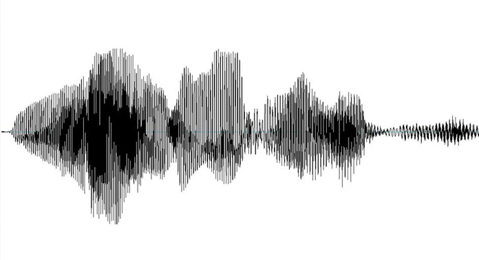
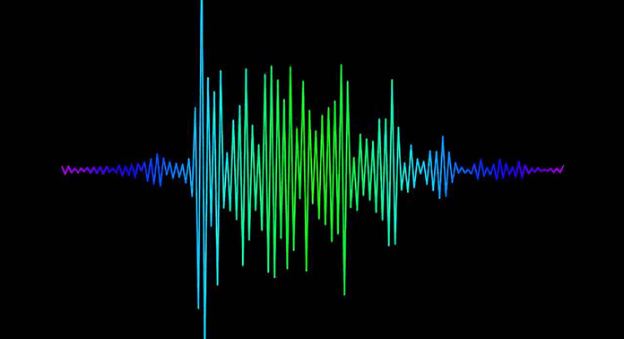
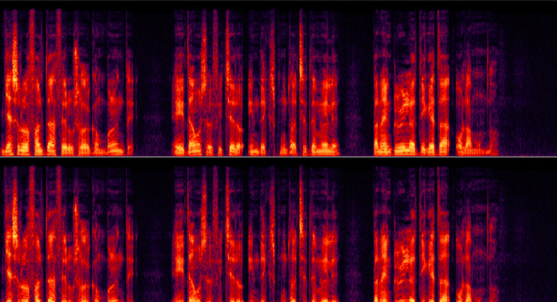

HOME
CONCEPTOS
Conceptos de Acústica
En este apartado damos a conocer algunos conceptos básicos de acústica. Muchos de nuestros clientes son profesionales del sector y no les ayudará mucho, pero es posible que en determinadas ocasiones pueda servir de recordatorio algunos de los términos aquí explicados. En cualquier caso ponemos a disposición esta herramienta de consulta básica para completar o recordar los conocimientos básicos en el campo de la acústica.
El Sonido y el Ruido
Cuando se habla de ruido, a menudo se piensa en una sensación sonora molesta o en caso extremo incluso dolorosa. Desde el punto de vista físico, un ruido es una mezcla compleja de sonidos de varias frecuencias y en general se distinguen: los ruidos estacionarios, que prácticamente no tienen fluctuaciones en función del tiempo, y los ruidos no estacionarios, que presentan fluctuaciones más o menos fuertes.
Oscilogramas
El oscilograma de un ruido o de un sonido representa la variación de la presión sonora en función del tiempo. Normalmente se trata de la presión instantánea y no de la presión eficaz. En casos de ruidos perfectamente estacionarios, el valor eficaz de la presión permanece constante en función del tiempo y por ello, un diagrama que represente la presión eficaz no es muy útil en este caso. Cuando se trata de ruidos no estacionarios, la presión eficaz, como la presión instantánea, es una magnitud que fluctúa en función del tiempo, por ello está justificada su representación bajo forma de oscilograma
Presión sonora
El sonido es una sensación auditiva provocada por las vibraciones y ondas acústicas de frecuencia entre 20 Hz y 20.000 Hz., que se propagan en un medio sólido, líquido o gaseoso. Contrariamente a las ondas electromagnéticas (ondas luminosas, ondas de radio, etc.), el sonido para propagarse tiene necesidad de un medio, no se propaga en el vacío. Cuando las frecuencias de excitación del fenómeno acústico son inferiores a 20 Hz. se habla de infrasonidos. Cuando son superiores a 20.000 Hz., de ultrasonidos.
Potencia acústica
Para caracterizar la emisión sonora de una fuente de ruido, generalmente se da su potencia. Se corresponde con la cantidad de energía radiada por unidad de tiempo y se expresa en Vatios. La potencia es un parámetro intrínseco de la fuente de ruido al igual que lo es la potencia eléctrica de una bombilla. El valor de la potencia de la bombilla no es variable según el color de las paredes de la habitación donde se encuentre, en cambio, la iluminación será mayor en una habitación con las paredes pintadas de blanco que en una habitación con las paredes pintadas de negro. Lo mismo sucede con la presión, dependiendo si la fuente de ruido se encuentra en campo libre o bien se encuentra en campo reverberante.
Frecuencia (Hz)
El número de veces que tiene ligar una compresión-dilatación del aire por unidad de tiempo (segundos) es lo que se define como la frecuencia. A mayor número de repeticiones, mayor frecuencia (altas frecuencias o agudos). A menor número de repeticiones, frecuencia menor (bajas frecuencias o bajos). Entre los bajos y los agudos están los medios, o como bien puede deducirse, las medias frecuencias.
Espectros
El ruido, como cualquier función f(x) ó f(t), puede ser descompuesto mediante la transformada de Fourier en una serie convergente de términos cuyos sumandos se corresponden con cada una de las componentes frecuenciales de la señal. Cada sumando va multiplicado por una constante: la amplitud. El estudio de las componentes frecuenciales de un ruido se denomina en acústica Análisis Frecuencial y el resultado de la transformada de Fourier es el espectro de la señal.